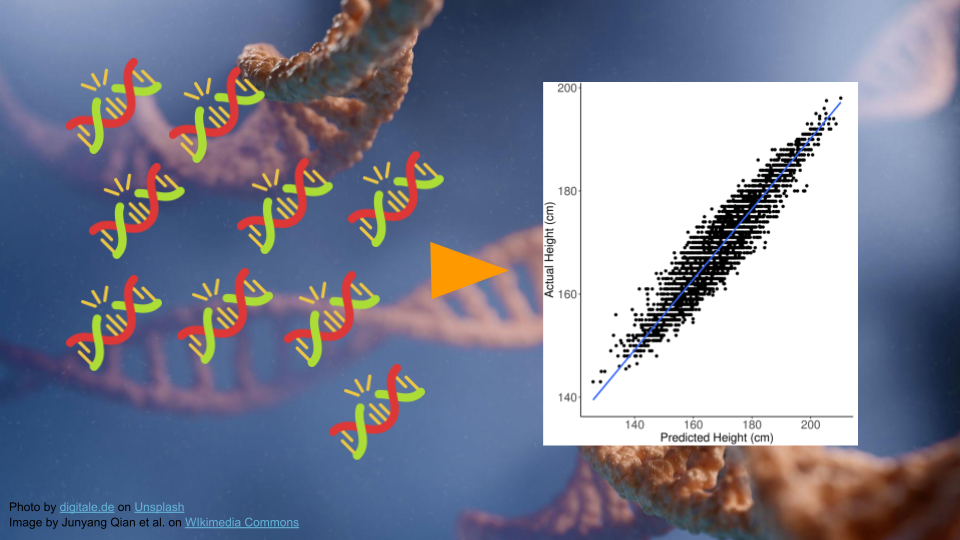

Genomic Medicine: Polygenic Risk Score Calculation
Overview
This activity will walk through how to use an online polygenic risk score (PRS) calculator, as well as how to interpret the outcome. Students will compare calculations using different studies, demonstrating the importance of study selection and ancestry in PRS interpretation.
Duration: Approximately 1.5-2 hours
Learning Objectives
Differentiate between Mendelian and polygenic traits.
Explore variants and studies through an online database (EMBL-EBI).
Calculate and interpret polygenic risk scores.
Compare risk percentiles using studies that were conducted using cases and controls from different ancestral populations.
Identify and critique scientific issues relating to society or ethics (see GSA core competencies).
Materials and Setup
Students will need:
- A web browser and an internet connection for this activity. Students will use this website: https://prs.byu.edu/calculate_score.html.
- Access to Microsoft Excel or Google Sheets may be helpful.
Toy data is hosted at: https://genomicseducation.org/data/prs_ind_1.txt
Download the student activity as:
Google Slides presentation available for borrowing images here.
Answer key available here. Please message Ava Hoffman (ahoffma2 at fredhutch dot org) to get access.
Additional Background on PRS Scores and Prostate Cancer.
Scientific Topics
This activity focuses on understanding genetic risk in human disease. Students will gain exposure to the following:
Polygenic Risk Scores (PRS): This method estimates disease risk based on the cumulative effect of many genetic variants, each contributing a small amount. Students will use an online calculator.
Genomic Medicine: Discipline that uses genome-wide variant data to guide diagnosis and help determine treatment plans, especially for common diseases like diabetes or heart disease.
Genomic Databases: Students will look up variants linked to disease traits in EMBL-EBI, which are used to calculate PRS.
Ethics & Equity in Genomics: Current PRS tools are more accurate in individuals of European ancestry, which can facilitate discussion about health disparities and life saving treatment (e.g., early screening).
Outline
Part 1: Background and Data (30-40 minutes)
Part 2: Calculating PRS Score (45 minutes)
Part 3: Comparing Studies for PRS (20-30 minutes)